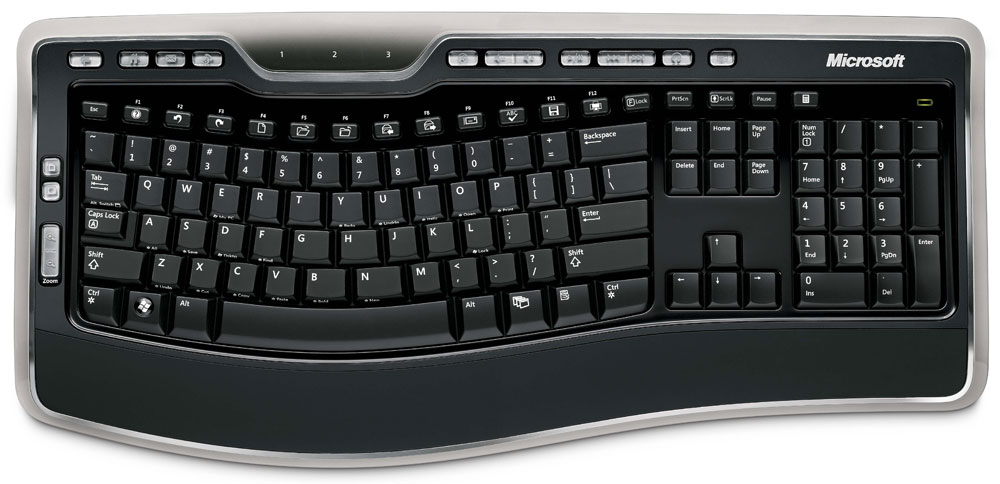

Entre los periféricos más habituales en cualquier ordenador tenemos:
Periférico de salida que muestra en imágenes lo que el ordenador quiere decirnos. Se conecta a una tarjeta gráfica que o bien se habrá conectado a una ranura de expansión o en el caso de las máquinas más sencillas a un puerto situado en la propia placa base.
Esta tarjeta es la encargada de traducir la información que el ordenador quiere presentar y enviarla al monitor con las características adecuadas de color y resolución. Los monitores se clasifican según su tamaño, tipo de pantalla, resolución y clase de tarjeta que puede controlarlos. En la acutalidad un monitor adecuado puede ser uno que nos de una resolución de alta definición 1920x1080 (formato 16:9) y 32 bit de color con un tamaño de 23 pulgadas. Respecto al tipo de pantalla hay que decir que los pesados monitores tradicionaes de tubo han sido prácticamente eliminados del mercado, siendo sustituidos por las pantallas planas de tecnología LCD.
Dispositivo para la entrada de datos. Permite la comunicación con el ordenador. Se conecta en un conector específico de 6 pines de tipo USB o PS/2. También existen los teclado inalámbricos que no están directamente conectados al ordenador, lo cual ofrece una mayor libertad de movientos en su uso. Sin embargo el teclado necesitará de un detector que reciba la señal enviándola al ordenador, este detector normalmente se concenta a través de un conector USB.
Existen dos tipos básicos de teclado, los tradicionales (con todas las teclas alineadas) y los ergonómicos (con las teclas formando una especie de V para evitar el cansancio en manos y muñecas). Los teclados también pueden ser mecánicos y no mecánicos (dependiendo del tipo de accionamiento de las teclas). También pueden clasificarse según el número y tipo de teclas: el teclado puede ser estándar y ampliado que posee más teclas que el primero.
|  |
Imagen 22. d-bj. Copyright
|
| |
Imagen 23. tips4pc. Copyright
|
Dispositivo de entrada de datos. Es un dispositivo apuntador usado para facilitar el manejo del entorno gráfico del ordenador, posibilitando el desplazamiento por la pantalla y el manejo rápido y cómodo de los menús. Generalmente está fabricado en plástico y se utiliza con una de las manos. El dispositivo detecta su movimiento relativo en dos dimensiones por la superficie plana en la que se apoya, reflejándose habitualmente su posición en el monitor a través de un puntero o flecha.
Los dispositvos tradicionales poseen una esfera en su base. Cuando se desliza el ratón sobre una superficie, el movimiento de la esfera transmite señales eléctricas definiendo la posición en la pantalla mediante el puntero. Durante los últimos años estos sitemas han ido siendo sustituidos por otros en los cuales la posición del puntero queda definida por las variaciones en una señal luminosa producida en la base del ratón al mover éste.
Hay muchos tipos de ratones según su forma, su conexión a la unidad central y número de botones (2, 3 o más que al pulsarlos efectúan ciertas operaciones sobre la pantalla). Últimamente se han generalizado los ratones con una pequeña ruedecilla (scroll) entre los botones, que sirve para desplazarse verticalmente en los documentos, circunstancia especialmente útil en Internet y documentos de texto muy amplios.
Los ordenadores portátiles no disponen de ratón en su lugar hay una pequeña pantalla sensible que se activan al contacto con el dedo (touch-pad).
Periférico de saldia que permite mostrar la información en forma impresa. La conexión de la impresora al ordenador se puede realizar desde distintos puertos o conectores, en la actualidad lo más habitual es realizar la conexión a través de un puerto USB. Este tipo de conexión tiene dos ventajas fundamentales, permite conectar el sistema en caliente y es válido tanto para arquitecturas tipo PC como Mac
En cuanto a la forma en que las impresoras imprimen se distinguen tres tipos principales. Ordenandolas de menor a mayor calidad de impresión tenemos las impresoras matriciales o de impacto, las de inyección o chorro de tinta y las láser (blanco y negro y color).
Uno de los parámetros básicos para determinar la calidad de la impresora es la resolución. Esta se mide en ppp (puntos por pulgada). Este número nos da la cantidad de puntos que puede escribir la máquina en una pulgada. Lógicamente a más ppp más calidad de imagen. Otras características importantes de las impresoras son la velocidad, esta se mide por el número de páginas que una máquina puede publicar en un minuto, y el tiempo de respuesta, tiempo que transcurre desde que se envía la orden de impresión hasta que la impresora inicia el trabajo de impresión.
Periférico de entrada que sirve para captar imágenes y textos, para así poder alterarlos, mejorarlos o guardarlos como ficheros en nuestro ordenador. Básicamente estos periféricos analizan imágenes impresas en papel, digitalizan sus elementos y los transfieren al ordenador, donde pueden ser manipulados por el usuario. Los escáneres varían en resolución, definición y profundidad de color.
Igual que en las impresoras la resolución es uno de los parámetros para saber la calidad del escáner con el que vamos a trabajar. A partir de 300x300 ppp un escáner nos da una gran calidad de imagen. Los escáneres actuales superan con facilidad los 600x600 ppp de resolución, llegando a los 4200*1200ppp. Esta magnitud depende del número de sensores y de la precisión del motor que el escáner lleva en su interior.
Otro parámetro de importancia en un escáner es la profundidad de color. Este valor hace referencia al número de colores que el escáner es capaz de reproducir. Es habitual en escáneres de sobremesa utilizar 24 bits para crear un color estándar (mayor número de bits mayor gama de colores), alcanzando algunos escáneres los 48 bits de color.
En la actualidad la mayor parte de los escáneres se conectan al ordenador a través de un puerto USB, es preciso instalar un driver que permita utilizarlo en todo su potencial.
En los últimos años también se han hecho muy populares los equipos multifunción que combinan las funciones de impresión, escáner, fotocopiadora e incluso fax. La ventaja de estos sistemas estriba en agrupar varios periféricos en uno, con el consiguiente ahorro de espacio, sin embargo suelen ofrecer unas prestaciones más bajas que los equipos específicos de gama media o alta.
- Dispositivos de almacenamiento masivo externos:
Por dispositivos externos de almacenamiento masivo entendemos aquellos sistemas que guardan información y que no están dentro de la unidad. Existen muchos tipos y constantemente aparecen en el mercado dispositivos más rápidos, de más capadiad, menor tamaño y menor precio. Entre ellos podemos citar dos:
Discos Duros externos: En la actaulidad practicamente el 100% de estos dispositivos se conectan a la unidad principal de sistema a través de un puerto USB, a través del cual obtienen la alimentación de corriente necesaria para su funcionamiento. En muchas ocasiones la conexión utiliza no uno sino dos puertos, uno de ellos destinado a reforzar la alimentación de corriente. Aunque cada vez son más rápidos, la velocidad de transferencia de datos es todavía inferior a la de los discos duros internos. Su uso más habitual es la realización de copias de seguridad o intercambiar grandes archivos entre dos ordenadores. Los modelos más habituales permiten almacenar 500 GB o 1 TB. Durante los últimos años se han ido haciendo muy populares los discos externos multimedias que a la capacidad de almacenamiento de los anteriores añaden la capadidad de reproducir material multimedia (música y video) gracias a las conexiones de salida y software que llevan instalado de fábrica.
Pendrive: También llamados "Llaveros de memoria" por su tamaño y aspecto, similar al de un llavero o minibolígrafo. Estos dispositivos están formados por una memoria flash integrada con un puerto USB a través del cual se realiza la conexión al ordenador. Tienen un tamaño mucho menor y ofrecen una capacidad de almacenamiento y seguridad muy superior al de los discos flexibles tradicionales a lo que prácticamente ha borrado de la circulación. Aunque estos datos quedan obsoletos en meses, por tener una referencia, podemos indicar una capadidad de almacenamiento para estos sistemas del orden de los 16 GB, garantizando una vida útil de 10.000 grabaciones/borrados y una permanencia de la información de diez años.
-
Tarjetas o dispositivos de conexión a red externas:
Periférico de entrada y salida que permite conectar nuestro ordenador a una red informática, bien sea
local (LAN) o a Internet. Aunque hay modelos que que permiten realizar la conexión a una red cableada, no es lo más normal ya que en esos casos se suele utilizar una tarjeta de red interna que en la mayor parte de los casos ya está integrada en la propia placa base. Normalmente estos dispositivos se utilizan para conectar el ordenador a una red inalámbrica por medio de tecnología WIFI o bluetooth. Su forma y tamaño es similar a la de las unidades pendrive. Estos sistemas brindan una velocidad de transmisión de datos inferior a la de las conexiones por cable pero más que suficiente para trabajar de forma adecuada. El
estándar para dispositivos inalámbricos conocido como 802.11b (el más utilizado en la actualidad) ofrece una transferencia de datos máxima de 11Mbps (que varía con la distancia entre el ordenador y la “antena” que da servicio).